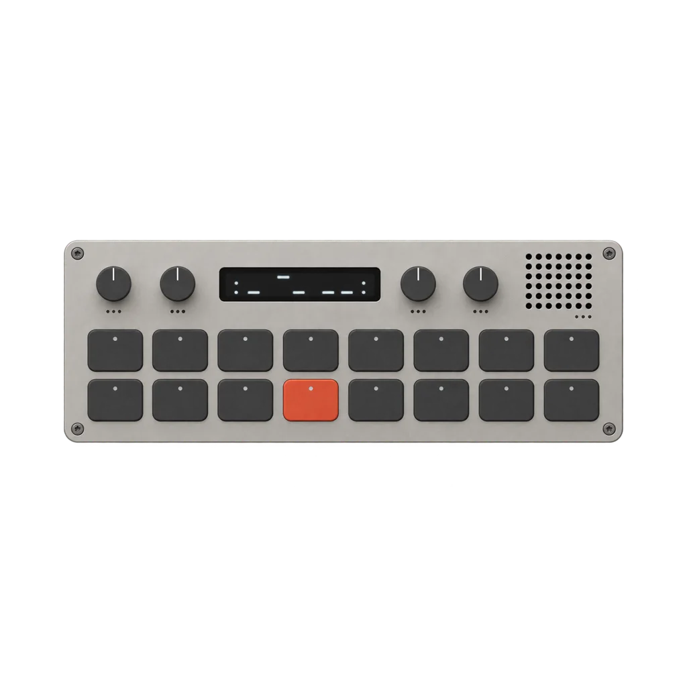
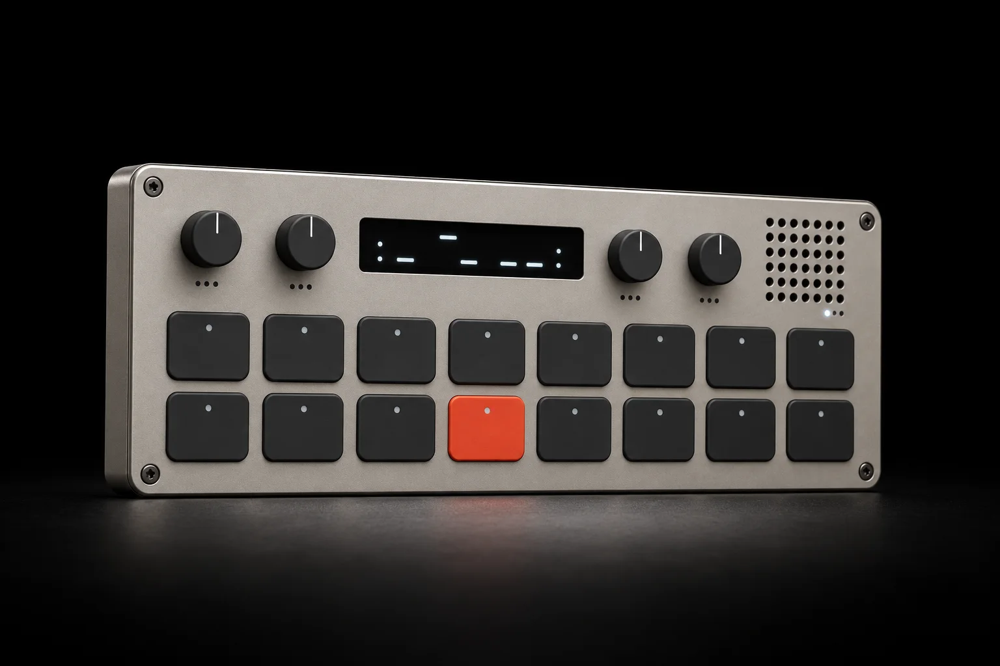
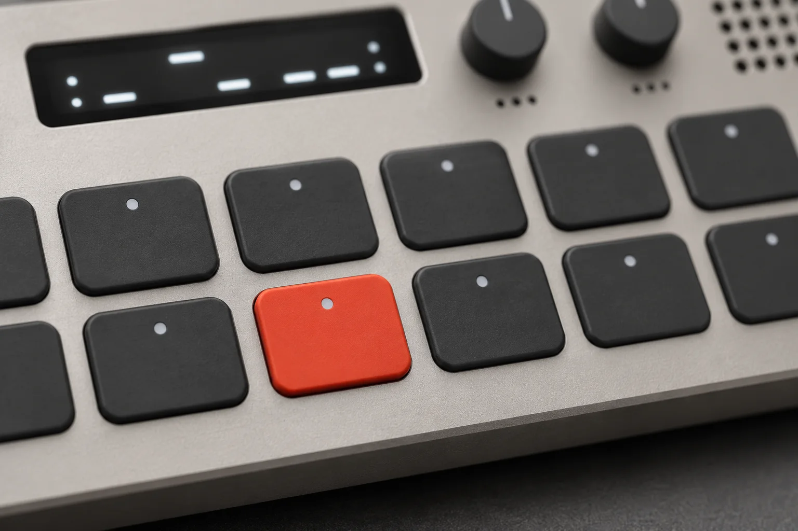
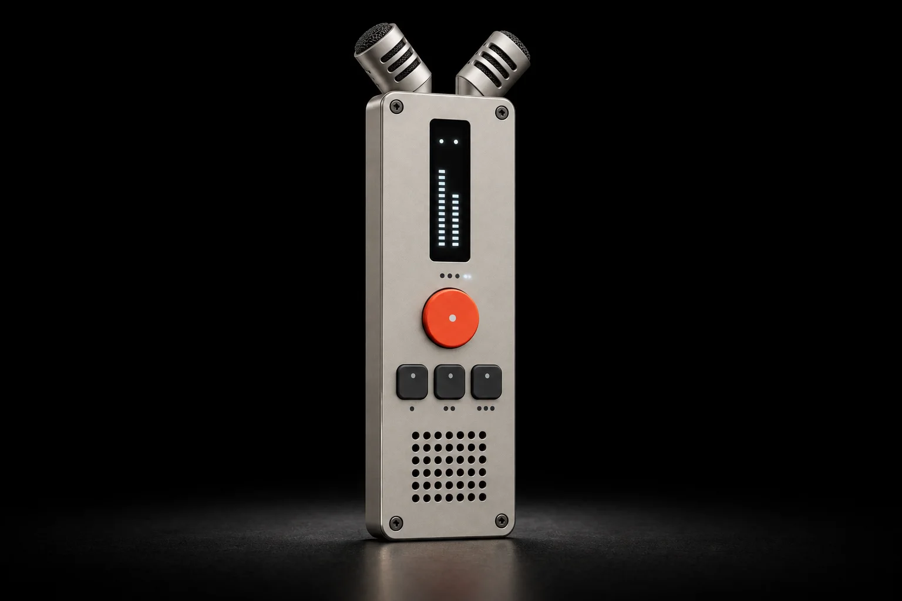
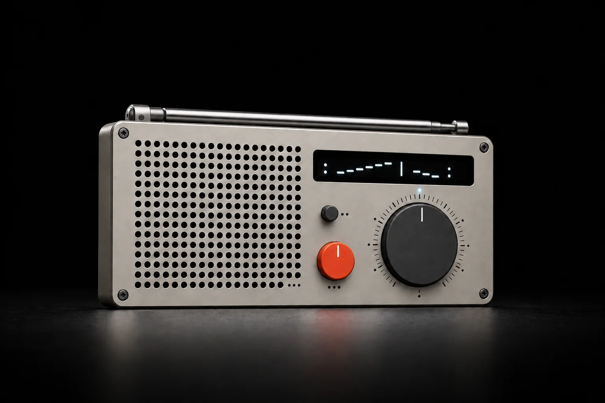
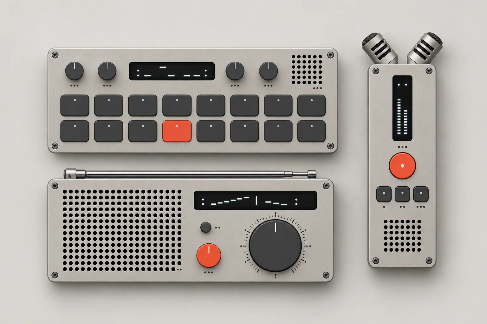

instruments
shown at the same scale. made in runs of four hundred on refshaleøen; prices include 25% danish vat.
-
k-1 pocket synthesizer
two-operator fm, sixteen keys, nine hours on a charge.
dkk 2,400 -
r-2 field recorder
two crossed capsules, 32-bit float, one red button.
dkk 3,100 -
w-3 shortwave radio
2.3 to 26.1 mhz on a dial that turns the old way.
dkk 1,850

sixteen keys. the red one is f.
i am a two-operator fm synthesizer milled from one block of bead-blasted aluminium. sixteen keys, four knobs and a small screen that tells you what you just played. every key is tuned to the same minor pentatonic scale, so there is no wrong note on me: start on the red key and wander. i run for nine hours, i weigh 268 grams, and i have never asked anyone to update me before they were allowed to make a sound.
KB-K1 / 212 x 77 x 14 mm / 268 g / 2000 mah / usb-c
top row q to i, bottom row a to k. the knobs on the k-1 above turn: drag up or down.


i hear what you walked past.
two capsules crossed at ninety degrees, 32-bit float so nothing you point me at can clip, and a red button big enough to find with a glove on. press it once and i am recording. press it again and the take is numbered, dated and tagged with where we were standing. the harbour at twenty to six in the morning sounds like the meter beside this.
KB-R2 / 67 x 192 x 18 mm / 196 g / 1500 mah / 14 h at 48 khz
take 00700:00.0

somewhere a station is still on air.
i receive 2.3 to 26.1 megahertz with a dial that turns the way radios used to. there is no app and no account. there is a telescopic antenna, a speaker the size of a palm and, if you turn me slowly after dark, voices from places you have never been. two stations are broadcasting on this page tonight. take your time.
KB-W3 / 236 x 97 x 24 mm / 412 g / 3 x aa or usb-c / 30 h
noise
turn the dial, or use the arrow keys.
showing 5.8 to 22 mhz, the broadcast bands. two stations are on air.
the family
one screw size, one charging cable, one battery standard. they were drawn to live in the same drawer.

- 1KB-K1pocket synthesizer212 x 77 x 14 mm / 268 g / 2000 mah, 9 h
- 2KB-K1-Ddisplayoled, 128 x 24 px, readable in direct sun
- 3KB-W3-Atelescopic antennastainless, 140 to 610 mm
- 4KB-W3shortwave radio236 x 97 x 24 mm / 412 g / 3 x aa or usb-c, 30 h
- 5KB-R2-Ccapsule pairxy at 90 degrees, 1/2 inch electret
- 6KB-R2field recorder67 x 192 x 18 mm / 196 g / 1500 mah, 14 h
manuals and firmware
firmware installs over usb-c from any browser. no account, no app, and the old versions stay here.
| model | firmware | released | manual | downloads |
|---|---|---|---|---|
| k-1 pocket synthesizer | 3.2.1 | 18 sep 2026 | pdf, 4.8 mb | firmwaremanual |
| r-2 field recorder | 1.9.0 | 02 jul 2026 | pdf, 3.1 mb | firmwaremanual |
| w-3 shortwave radio | 2.0.4 | 21 may 2026 | pdf, 5.6 mb, with band chart | firmwaremanual |
| k-1 rev 2 (2024) | 2.8.7 | 11 nov 2025 | pdf, 4.2 mb | firmwaremanual |
field notes
written by the people who build the instruments, roughly once a fortnight.
- 6 min
recording the sound at 4 a.m. with two r-2s and a thermos
ida took the first ferry to ven and left both recorders running on the quay for an hour. what came back, and why she kept the gull.
- 4 min
why the k-1 has sixteen keys and not twenty-five
a pentatonic scale, two rows and the inside pocket of a coat: the arithmetic behind the keybed.
- 2 min
firmware 3.2 for the k-1: a longer decay and a quieter screen
the decay knob now reaches 1.8 seconds, and the display dims after a minute of silence.